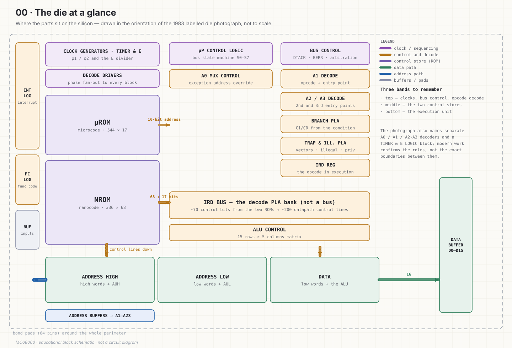
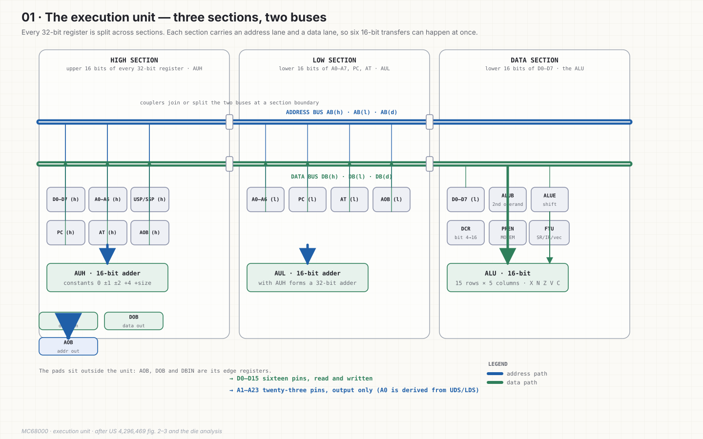
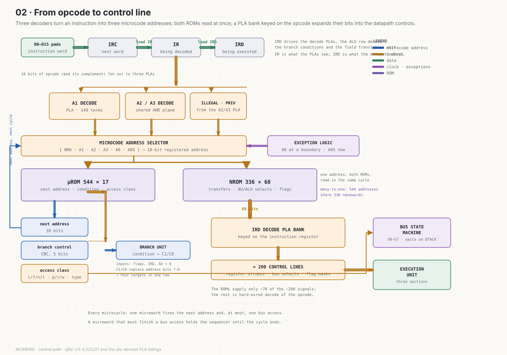
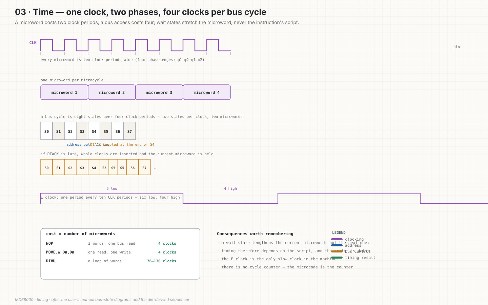
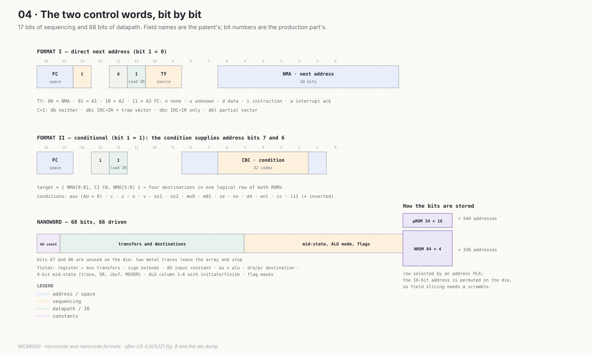

Educational schematics, not circuit diagrams: every block is a functional unit, every line is a path, and the colours carry meaning across all five sheets — address, data, control, clock. Read them in order: the die, the datapath, the control path, time, and finally the two control words.




